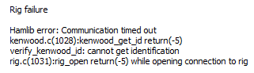

To all FT8 gurus! I somehow hit the wrong “reset” button on my WSJT-X and now cannot get the program talking to my Elecraft K3. I did not change anything on the rig. I hit a reset button on the WSJT-X screen, thinking I was resetting the view for the spectrum display. I have tried re-configuring the WSJT-X but keep getting this message when I try the TEST CAT connection to the rig. Any suggestions? 73, Steve N6SJ  |